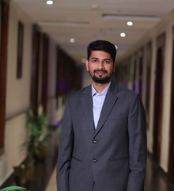

Background
About me

Mechanical engineer and researcher working on ultrasonic guided wave inspection, remote metrology, and machine vision systems, with a background spanning IIT Bombay, IIT Kanpur, and Manipal Institute of Technology.
Interested in structural health monitoring, robotics, and the design and development of new inspection instruments.
Education
Master of Science by Research (MSR), Mechanical Engineering
Indian Institute of Technology Bombay, Mumbai, India · 2021–2024
PI: Professor Nitesh P. Yelve, WaVE Lab.
Master of Technology (M.Tech), Industrial Automation and Robotics
Manipal Institute of Technology, Manipal, India · 2017–2018
- Exchange Student, Indian Institute of Technology Kanpur, Kanpur, India · 2018–2019
PI: Professor K S Venkatesh, Computer Vision Lab.
Bachelor of Mechanical Engineering (B.E.)
Visvesvaraya Technological University, Belgaum, India
- St Joseph Engineering College, Mangaluru, India · 2012–2016
Professional Experience
- Project Engineer, Computer Vision Lab, Electrical Engineering Department, Indian Institute of Technology Kanpur, Kanpur, India · June 2019 – June 2021
- Teaching Assistant, Indian Institute of Technology Bombay, Mumbai, India · March 2023 – June 2023
Areas of Interest
Additional Learning
- Diploma in Product Design (Catia V5, AutoCAD, and GD & T) — CADD Centre Training Services
Awards
- Best Student Award — Indian Society for Technical Education (ISTE), Karnataka Section, 2016
Training
- TwinCAT Software — Beckhoff Automation Private Limited
- Graphical System Design and Virtual Labs using LabVIEW — National Institute of Technology Surathkal
- Computational Fluid Dynamics — HT India Labs